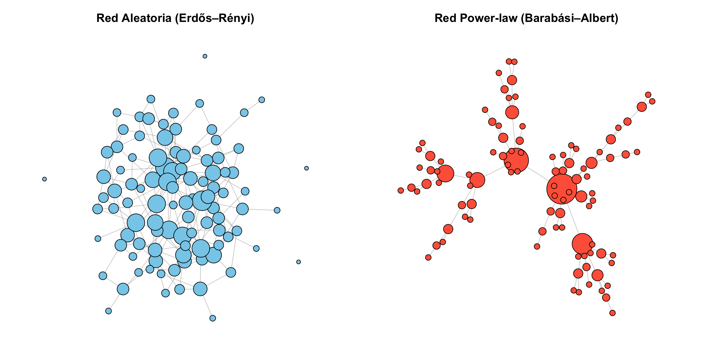
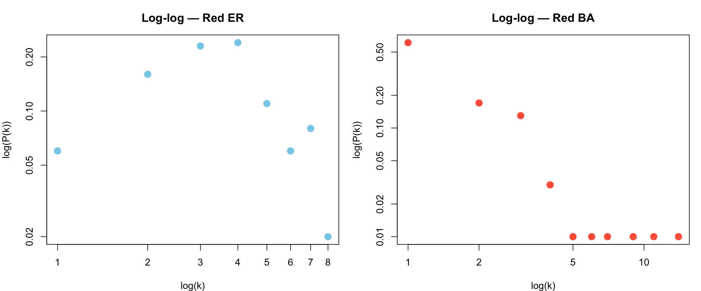
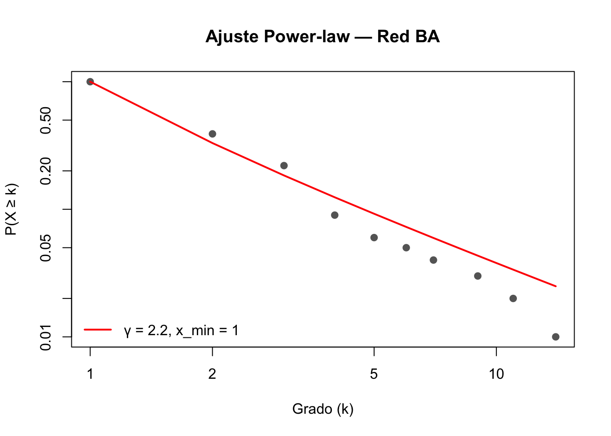
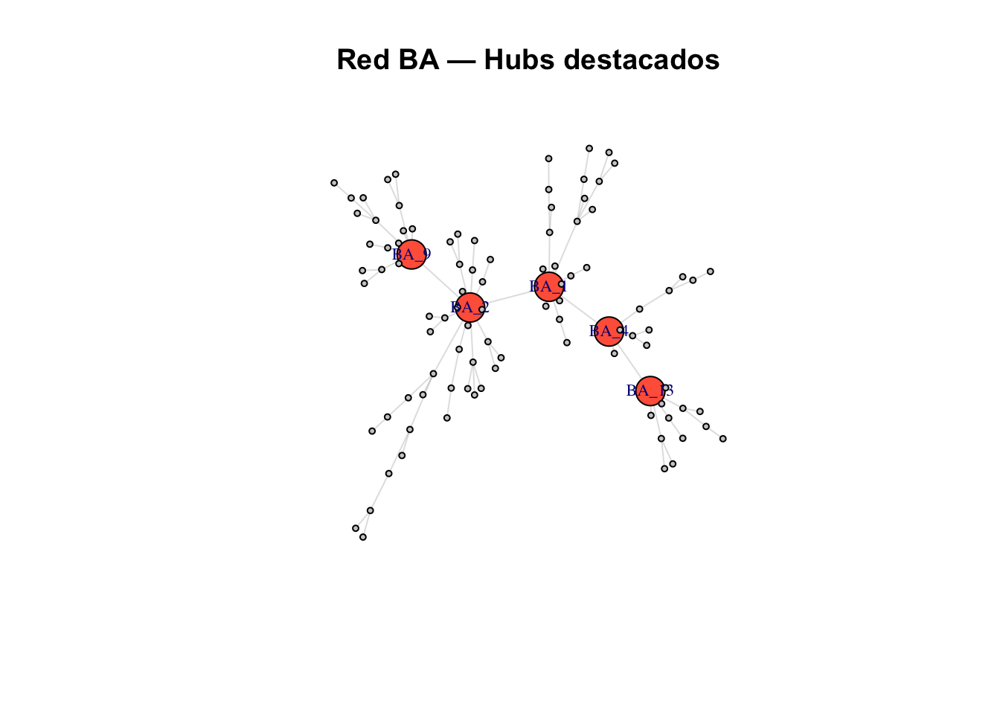
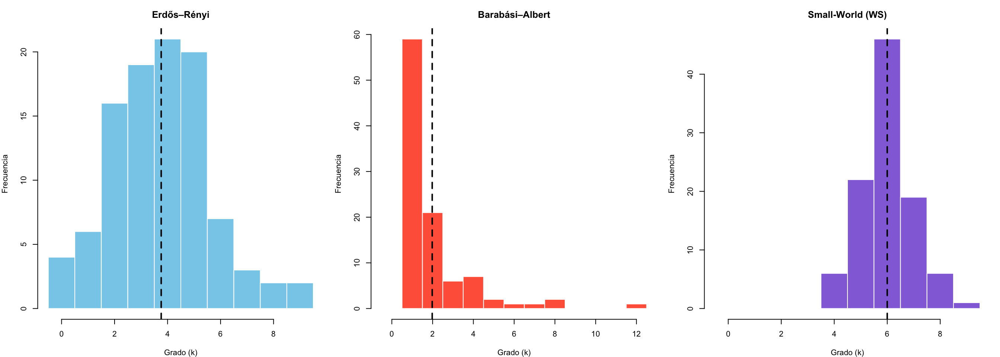
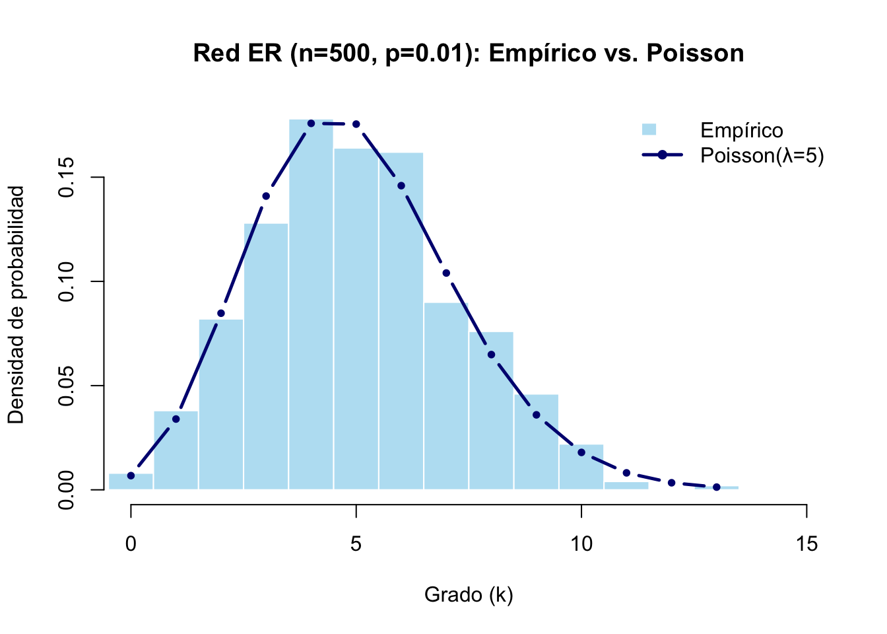
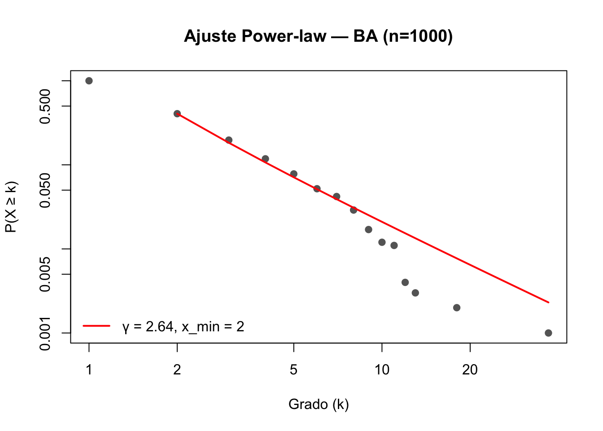

flowchart TD
A[Distribuciones de grado] --> B[Modelo Erdős–Rényi]
A --> C[Modelo Barabási–Albert]
B --> D[Distribución Poisson]
C --> E[Distribución Power-law]
D --> F[Grado homogéneo]
E --> G[Hubs y colas pesadas]
A --> H[Comparación visual]
H --> I[Histogramas y gráficos log-log]
A --> J[Ajuste estadístico]
J --> K[Paquete poweRlaw]
Grado y distribuciones
🎯 Objetivos de aprendizaje
Al finalizar este capítulo serás capaz de:
- Diferenciar entre distribuciones de grado tipo Poisson y power-law (ley de potencia).
- Generar redes con los modelos Erdős–Rényi (ER) y Barabási–Albert (BA) en
igraph. - Visualizar y comparar distribuciones de grado usando histogramas y gráficos log-log.
- Ajustar una ley de potencia a datos de grado con el paquete
poweRlaw. - Identificar hubs (nodos altamente conectados) y explicar su importancia en la estructura de la red.
Pregunta motivadora: En internet, unos pocos sitios web (Google, Facebook, Wikipedia) reciben miles de millones de visitas, mientras que la inmensa mayoría recibe muy pocas. ¿Por qué esta desigualdad extrema? ¿Es azar o hay un mecanismo detrás?
Preparación del entorno
library(igraph)
Attaching package: 'igraph'The following objects are masked from 'package:stats':
decompose, spectrumThe following object is masked from 'package:base':
unionlibrary(poweRlaw)
📦 Paquete requerido
Si no tienes instalado poweRlaw, ejecuta:
install.packages("poweRlaw")Este paquete permite ajustar y evaluar distribuciones de ley de potencia sobre datos empíricos.
Dos modelos, dos mundos
Antes de sumergirnos en los datos, necesitas entender dos modelos fundamentales de generación de redes. Cada uno produce redes con propiedades radicalmente distintas.
Modelo Erdős–Rényi (ER): redes aleatorias
En este modelo, cada par de nodos tiene una probabilidad fija \(p\) de estar conectado, independientemente de todo lo demás. Es como lanzar una moneda (con probabilidad \(p\) de “cara”) por cada par posible de nodos.
\[ P(\text{arista entre } i \text{ y } j) = p, \quad \forall \, i \neq j \]
El resultado: la mayoría de los nodos terminan con un grado similar, cercano al promedio \(\langle k \rangle \approx p \cdot (n-1)\), y la distribución de grado sigue una distribución de Poisson [@erdos1959].
💡 Concepto clave
En una red Erdős–Rényi, la distribución de grado es tipo Poisson: la mayoría de los nodos tienen un grado parecido al promedio y es muy raro encontrar nodos con grado extremadamente alto o bajo. Es una red “democrática”.
Modelo Barabási–Albert (BA): enlace preferencial
Este modelo introduce un mecanismo más realista: los nodos nuevos prefieren conectarse a nodos que ya tienen muchas conexiones (“los ricos se hacen más ricos”). Esto se llama preferential attachment (enlace preferencial).
\[ P(\text{conectar a nodo } i) = \frac{k_i}{\sum_j k_j} \]
donde \(k_i\) es el grado del nodo \(i\). El resultado: una distribución de grado tipo ley de potencia (power-law) donde unos pocos nodos (hubs) acumulan una cantidad desproporcionada de conexiones [@barabasi2016; @albert2002].
💡 Concepto clave
En una red Barabási–Albert, la distribución de grado sigue una ley de potencia: \(P(k) \sim k^{-\gamma}\). Esto significa que hay muchos nodos con pocas conexiones y unos pocos hubs con muchísimas. Es una red “desigual”.
Comparación rápida
| Característica | Erdős–Rényi (ER) | Barabási–Albert (BA) |
|---|---|---|
| Mecanismo | Conexión aleatoria con prob. \(p\) | Enlace preferencial |
| Distribución de grado | Poisson | Power-law |
| Presencia de hubs | Muy improbable | Sí, emergentes |
| Ejemplo real | Red de carreteras | Internet, redes sociales |
| Función en igraph | sample_gnp() |
sample_pa() |
Crear y visualizar ambas redes
Vamos a generar una red de cada tipo con 100 nodos y compararlas visualmente.
set.seed(123)
# Red Erdős–Rényi: 100 nodos, probabilidad de conexión 0.04
g_er <- sample_gnp(100, p = 0.04)
V(g_er)$name <- paste0("ER_", 1:vcount(g_er))
# Red Barabási–Albert: 100 nodos, enlace preferencial
g_ba <- sample_pa(100, directed = FALSE)
V(g_ba)$name <- paste0("BA_", 1:vcount(g_ba))par(mfrow = c(1, 2), mar = c(1, 1, 3, 1))
# Red ER
plot(g_er,
vertex.size = degree(g_er) * 1.5 + 3,
vertex.label = NA,
vertex.color = "skyblue",
edge.color = adjustcolor("gray50", alpha = 0.4),
main = "Red Aleatoria (Erdős–Rényi)")
# Red BA
plot(g_ba,
vertex.size = degree(g_ba) * 1.5 + 3,
vertex.label = NA,
vertex.color = "tomato",
edge.color = adjustcolor("gray50", alpha = 0.4),
main = "Red Power-law (Barabási–Albert)")
Observa la diferencia: en la red ER los nodos tienen tamaños similares, mientras que en la red BA unos pocos nodos destacan por ser mucho más grandes (más conectados).
Distribuciones de grado
Ahora veamos la distribución de grado de cada red. Aquí es donde la diferencia se vuelve evidente numéricamente.
Histogramas
deg_er <- degree(g_er)
deg_ba <- degree(g_ba)
par(mfrow = c(1, 2), mar = c(4, 4, 3, 1))
hist(deg_er,
breaks = seq(-0.5, max(deg_er) + 0.5, by = 1),
col = "skyblue", border = "white",
main = "Grado — Red ER",
xlab = "Grado (k)", ylab = "Frecuencia")
abline(v = mean(deg_er), col = "navy", lwd = 2, lty = 2)
legend("topright", paste("Media =", round(mean(deg_er), 1)),
col = "navy", lty = 2, lwd = 2, bty = "n")
hist(deg_ba,
breaks = seq(-0.5, max(deg_ba) + 0.5, by = 1),
col = "tomato", border = "white",
main = "Grado — Red BA",
xlab = "Grado (k)", ylab = "Frecuencia")
abline(v = mean(deg_ba), col = "darkred", lwd = 2, lty = 2)
legend("topright", paste("Media =", round(mean(deg_ba), 1)),
col = "darkred", lty = 2, lwd = 2, bty = "n")
💡 Concepto clave
La distribución de Poisson (ER) es simétrica y concentrada alrededor de la media. La distribución power-law (BA) tiene una cola pesada (heavy tail): la mayoría de nodos tienen grado bajo, pero unos pocos alcanzan grados extremadamente altos.
Gráfico log-log
La forma más clara de identificar una ley de potencia es graficar la distribución de grado en escala logarítmica en ambos ejes. Si la distribución es power-law, los puntos se alinean aproximadamente en una recta.
\[ \log P(k) = -\gamma \log k + C \quad \Rightarrow \quad \text{recta en escala log-log} \]
par(mfrow = c(1, 2), mar = c(4, 4, 3, 1))
# ER en log-log
dd_er <- degree_distribution(g_er)
k_er <- which(dd_er > 0) - 1 # grados con frecuencia > 0
pk_er <- dd_er[dd_er > 0]
plot(k_er, pk_er,
log = "xy", pch = 19, col = "skyblue", cex = 1.5,
main = "Log-log — Red ER",
xlab = "log(k)", ylab = "log(P(k))")Warning in xy.coords(x, y, xlabel, ylabel, log): 1 x value <= 0 omitted from
logarithmic plot# BA en log-log
dd_ba <- degree_distribution(g_ba)
k_ba <- which(dd_ba > 0) - 1
pk_ba <- dd_ba[dd_ba > 0]
plot(k_ba, pk_ba,
log = "xy", pch = 19, col = "tomato", cex = 1.5,
main = "Log-log — Red BA",
xlab = "log(k)", ylab = "log(P(k))")
⚠️ Error frecuente
No confundas “parece una recta en log-log” con “es una ley de potencia”. Para confirmar se necesita un ajuste estadístico formal, que veremos en la siguiente sección. Muchas distribuciones con cola pesada (log-normal, exponencial estirada) pueden parecer lineales en log-log con pocos datos.
Ajuste de ley de potencia con poweRlaw
El paquete poweRlaw implementa el método riguroso de Clauset, Shalizi y Newman para ajustar distribuciones power-law y estimar sus parámetros.
El proceso tiene tres pasos:
# Obtener los grados de la red BA
deg_ba <- degree(g_ba)
# Crear un objeto de distribución discreta power-law
m <- displ$new(deg_ba)
cat("Modelo creado con", length(deg_ba), "observaciones\n")Modelo creado con 100 observaciones# Estimar el valor mínimo de k a partir del cual aplica la ley de potencia
est <- estimate_xmin(m)
m$setXmin(est)
# Estimar el exponente gamma
m$setPars(estimate_pars(m))
cat("x_min estimado:", m$getXmin(), "\n")x_min estimado: 1 cat("Exponente gamma:", round(m$getPars(), 3), "\n")Exponente gamma: 2.196
💡 Concepto clave
El parámetro x_min indica el grado mínimo a partir del cual la distribución se comporta como ley de potencia. Los nodos con grado menor a x_min no siguen este patrón. El exponente \(\gamma\) típicamente está entre 2 y 3 en redes reales.
plot(m,
pch = 19, col = "gray40",
xlab = "Grado (k)", ylab = "P(X ≥ k)",
main = "Ajuste Power-law — Red BA")
lines(m, col = "red", lwd = 2)
legend("bottomleft",
legend = paste0("γ = ", round(m$getPars(), 2),
", x_min = ", m$getXmin()),
col = "red", lwd = 2, bty = "n")
🔑 Recuerda
El gráfico del ajuste muestra la función de distribución acumulada complementaria (CCDF), es decir, \(P(X \geq k)\), no el histograma. La CCDF es más estable y confiable para evaluar colas pesadas que el histograma, especialmente con pocos datos.
Identificar hubs
Los hubs son los nodos con grado extremadamente alto en una red power-law. Actúan como conectores centrales y su eliminación puede fragmentar la red (esto lo veremos a fondo en el ?@sec-robustez).
# Top 5 nodos más conectados en la red BA
top_hubs <- sort(degree(g_ba), decreasing = TRUE)[1:5]
# Mostrar como tabla
knitr::kable(
data.frame(
Nodo = names(top_hubs),
Grado = as.integer(top_hubs)
),
caption = "Los 5 hubs de la red Barabási–Albert",
col.names = c("Nodo", "Grado")
)| Nodo | Grado |
|---|---|
| BA_2 | 14 |
| BA_1 | 11 |
| BA_9 | 9 |
| BA_13 | 7 |
| BA_4 | 6 |
# Colores: rojo para hubs, gris para el resto
es_hub <- degree(g_ba) >= min(top_hubs)
V(g_ba)$color <- ifelse(es_hub, "tomato", "gray80")
V(g_ba)$size <- ifelse(es_hub, 15, 3)
plot(g_ba,
vertex.label = ifelse(es_hub, V(g_ba)$name, NA),
vertex.label.cex = 0.7,
edge.color = adjustcolor("gray60", alpha = 0.3),
main = "Red BA — Hubs destacados")
Comparación completa: ER vs. BA vs. Small-World
Agreguemos un tercer modelo: la red small-world de Watts y Strogatz [@watts1998], que combina alto clustering con distancias cortas.
set.seed(42)
redes <- list(
"Erdős–Rényi" = sample_gnp(100, p = 0.04),
"Barabási–Albert" = sample_pa(100, directed = FALSE),
"Small-World (WS)" = sample_smallworld(1, 100, nei = 3, p = 0.1)
)colores <- c("skyblue", "tomato", "mediumpurple")
par(mfrow = c(1, 3), mar = c(4, 4, 3, 1))
for (i in seq_along(redes)) {
deg <- degree(redes[[i]])
hist(deg,
breaks = seq(-0.5, max(deg) + 0.5, by = 1),
col = colores[i], border = "white",
main = names(redes)[i],
xlab = "Grado (k)", ylab = "Frecuencia")
abline(v = mean(deg), col = "black", lwd = 2, lty = 2)
}
# Resumen de métricas
resumen <- data.frame(
Modelo = names(redes),
Nodos = sapply(redes, vcount),
Aristas = sapply(redes, ecount),
Grado_medio = round(sapply(redes, function(g) mean(degree(g))), 2),
Grado_max = sapply(redes, function(g) max(degree(g))),
Grado_min = sapply(redes, function(g) min(degree(g))),
Densidad = round(sapply(redes, edge_density), 4)
)
knitr::kable(resumen,
caption = "Comparación de métricas básicas entre tres modelos de red",
col.names = c("Modelo", "Nodos", "Aristas", "Grado medio",
"Grado máx.", "Grado mín.", "Densidad"))| Modelo | Nodos | Aristas | Grado medio | Grado máx. | Grado mín. | Densidad | |
|---|---|---|---|---|---|---|---|
| Erdős–Rényi | Erdős–Rényi | 100 | 188 | 3.76 | 9 | 0 | 0.0380 |
| Barabási–Albert | Barabási–Albert | 100 | 99 | 1.98 | 12 | 1 | 0.0200 |
| Small-World (WS) | Small-World (WS) | 100 | 300 | 6.00 | 9 | 4 | 0.0606 |
⚠️ Error frecuente
No compares distribuciones de grado entre redes con diferente número de aristas sin tener en cuenta la densidad. Una red con el doble de aristas naturalmente tendrá grados más altos, sin que eso indique un mecanismo diferente.
Ejercicios
Ejercicios resueltos
Ejercicio resuelto 1: Genera una red ER con 500 nodos y \(p = 0.01\). Calcula el grado medio teórico y compáralo con el empírico. Visualiza la distribución de grado superpuesta con la distribución de Poisson teórica.
📝 Solución
Paso 1: Generar la red y calcular los grados.
set.seed(99)
n <- 500
p <- 0.01
g_er500 <- sample_gnp(n, p)
deg <- degree(g_er500)
# Grado medio teórico vs empírico
grado_teorico <- p * (n - 1)
grado_empirico <- mean(deg)
cat("Grado medio teórico: ", round(grado_teorico, 2), "\n")Grado medio teórico: 4.99 cat("Grado medio empírico:", round(grado_empirico, 2), "\n")Grado medio empírico: 5.03 Paso 2: Superponer la distribución empírica con la Poisson teórica.
# Histograma normalizado (densidad)
hist(deg,
breaks = seq(-0.5, max(deg) + 0.5, by = 1),
col = adjustcolor("skyblue", alpha = 0.6), border = "white",
probability = TRUE,
main = "Red ER (n=500, p=0.01): Empírico vs. Poisson",
xlab = "Grado (k)", ylab = "Densidad de probabilidad",
xlim = c(0, max(deg) + 2))
# Curva de Poisson teórica
k_vals <- 0:max(deg)
lines(k_vals, dpois(k_vals, lambda = grado_teorico),
col = "navy", lwd = 2.5, type = "b", pch = 16, cex = 0.8)
legend("topright",
legend = c("Empírico", paste0("Poisson(λ=", round(grado_teorico, 1), ")")),
fill = c(adjustcolor("skyblue", 0.6), NA),
border = c("white", NA),
col = c(NA, "navy"), lwd = c(NA, 2.5), pch = c(NA, 16),
bty = "n", merge = TRUE)
Interpretación: El grado medio empírico es muy cercano al teórico \(\lambda = p(n-1) \approx 5\). La curva de Poisson se ajusta bien al histograma, confirmando que la distribución de grado en redes ER es efectivamente Poisson.
Ejercicio resuelto 2: Genera una red BA con 1000 nodos y ajusta una ley de potencia con poweRlaw. Reporta el exponente \(\gamma\) y el valor de \(x_{\min}\).
📝 Solución
Paso 1: Generar la red y extraer los grados.
set.seed(77)
g_ba1000 <- sample_pa(1000, directed = FALSE)
deg_ba1000 <- degree(g_ba1000)
cat("Nodos:", vcount(g_ba1000), "\n")Nodos: 1000 cat("Aristas:", ecount(g_ba1000), "\n")Aristas: 999 cat("Grado máximo:", max(deg_ba1000), "\n")Grado máximo: 37 Paso 2: Ajustar la ley de potencia.
m_1000 <- displ$new(deg_ba1000)
est_1000 <- estimate_xmin(m_1000)
m_1000$setXmin(est_1000)
m_1000$setPars(estimate_pars(m_1000))
cat("x_min estimado:", m_1000$getXmin(), "\n")x_min estimado: 2 cat("Exponente γ:", round(m_1000$getPars(), 3), "\n")Exponente γ: 2.641 Paso 3: Visualizar.
plot(m_1000, pch = 19, col = "gray40",
xlab = "Grado (k)", ylab = "P(X ≥ k)",
main = "Ajuste Power-law — BA (n=1000)")
lines(m_1000, col = "red", lwd = 2)
legend("bottomleft",
legend = paste0("γ = ", round(m_1000$getPars(), 2),
", x_min = ", m_1000$getXmin()),
col = "red", lwd = 2, bty = "n")
Interpretación: El exponente \(\gamma\) debería estar cerca de 3 (el valor teórico para redes BA generadas con \(m = 1\)). El ajuste visual muestra que la cola de la distribución sigue razonablemente bien la recta en escala log-log a partir de \(x_{\min}\).
Ejercicios con pistas
Ejercicio 1: Genera redes BA con 100, 500, 1000 y 5000 nodos. ¿Cómo cambia el grado del hub más conectado a medida que crece la red? Haz un gráfico de dispersión de \(n\) (tamaño de red) vs. grado máximo.
💡 Pista 1
Usa un for o sapply() sobre un vector de tamaños: tamanos <- c(100, 500, 1000, 5000). Para cada tamaño, genera la red y extrae max(degree(g)).
💡 Pista 2
Teóricamente, el grado máximo en una red BA crece como \(k_{\max} \sim \sqrt{n}\). Puedes superponer esta curva teórica sobre tus datos empíricos.
💡 Pista 3 — Pseudocódigo
1. tamanos <- c(100, 500, 1000, 5000)
2. set.seed(42)
3. grado_max <- sapply(tamanos, function(n) {
4. g <- sample_pa(n, directed = FALSE)
5. max(degree(g))
6. })
7. plot(tamanos, grado_max, type = "b", log = "xy")
8. # Superponer curva teórica: sqrt(n)Ejercicio 2: Crea una red ER con 200 nodos y \(p = 0.03\). Identifica los nodos con grado mayor al promedio + 2 desviaciones estándar. ¿Cuántos son? Coloréalos de rojo en la visualización.
💡 Pista 1
Calcula el umbral como mean(deg) + 2 * sd(deg). Luego usa which(deg > umbral) para identificar los nodos.
💡 Pista 2
En una distribución Poisson, aproximadamente el 2.5% de los valores están por encima de \(\mu + 2\sigma\). Para 200 nodos, espera alrededor de 5 nodos “extremos”.
💡 Pista 3 — Pseudocódigo
1. set.seed(10)
2. g <- sample_gnp(200, 0.03)
3. deg <- degree(g)
4. umbral <- mean(deg) + 2 * sd(deg)
5. extremos <- which(deg > umbral)
6. V(g)$color <- ifelse(deg > umbral, "red", "gray80")
7. V(g)$size <- ifelse(deg > umbral, 10, 3)
8. plot(g, vertex.label = NA)Ejercicio 3: Compara visualmente la distribución de grado de una red BA y una red small-world (Watts-Strogatz) en un gráfico log-log. ¿Cuál muestra un patrón más lineal? ¿Por qué?
💡 Pista 1
Genera ambas redes con sample_pa(500) y sample_smallworld(1, 500, nei = 3, p = 0.1). Calcula degree_distribution() para cada una.
💡 Pista 2
Para graficar en log-log, usa plot(k, pk, log = "xy"). Recuerda filtrar los valores donde \(P(k) > 0\) para evitar log(0).
💡 Pista 3 — Pseudocódigo
1. par(mfrow = c(1, 2))
2. Para cada red:
3. dd <- degree_distribution(g)
4. k <- which(dd > 0) - 1
5. pk <- dd[dd > 0]
6. plot(k, pk, log = "xy", pch = 19)La red BA debería mostrar un patrón más lineal porque su distribución es power-law. La small-world tiene distribución más acotada (similar a Poisson desplazada).
Ejercicios propuestos
Ejercicio propuesto 1 ⭐
Genera 5 redes ER de 100 nodos con \(p \in \{0.01, 0.05, 0.10, 0.20, 0.50\}\). Para cada una, calcula el grado medio y grafícalo contra \(p\). ¿La relación es lineal?
Autoevaluación: El grado medio teórico es \(\langle k \rangle = p(n-1) = 99p\). Para \(p = 0.50\), el grado medio debe ser cercano a 49.5.
Ejercicio propuesto 2 ⭐⭐
Usa poweRlaw para ajustar una ley de potencia a una red BA de 2000 nodos. Luego, intenta ajustar la misma distribución a una red ER de 2000 nodos con \(p = 0.01\). Compara los gráficos de ajuste. ¿Tiene sentido el ajuste power-law para la red ER?
Autoevaluación: El ajuste sobre la red ER debería ser visualmente pobre (la línea roja no sigue los puntos). Si el \(x_{\min}\) estimado es muy cercano al grado máximo, es señal de que la power-law no es un buen modelo para esos datos.
Ejercicio propuesto 3 ⭐⭐
Genera una red BA con 500 nodos. Encuentra los 10 hubs más conectados. Luego, crea un subgrafo que contenga solo esos 10 hubs y las aristas entre ellos (induced_subgraph()). ¿Están los hubs conectados entre sí?
Autoevaluación: En una red BA, los hubs suelen estar conectados entre sí (el hub más antiguo se conecta con los más nuevos). El subgrafo debería ser conexo o tener muy pocos componentes.
Ejercicio propuesto 4 ⭐⭐⭐
Diseña un experimento numérico: genera 50 redes BA de 500 nodos cada una (con diferentes semillas). Para cada red, ajusta la ley de potencia y guarda el exponente \(\gamma\). Grafica un histograma de los 50 valores de \(\gamma\). ¿Alrededor de qué valor se concentran? ¿Cuál es la varianza?
Autoevaluación: Los valores de \(\gamma\) deberían concentrarse alrededor de 3 (el valor teórico para el modelo BA clásico con \(m = 1\)). La varianza debería ser pequeña pero no nula, debido a la aleatoriedad finita.
Ejercicio propuesto 5 ⭐⭐⭐
Investiga: ¿Qué pasa con la distribución de grado de una red BA si cambias el parámetro m (número de aristas que agrega cada nodo nuevo) de 1 a 3 a 5? Genera las tres variantes con 1000 nodos, compara sus histogramas y ajusta la power-law a cada una. ¿Cambia el exponente \(\gamma\)?
Autoevaluación: El grado medio aumenta (\(\langle k \rangle \approx 2m\)), pero el exponente teórico \(\gamma = 3\) se mantiene independiente de \(m\) en el modelo BA estándar. Empíricamente podrías observar variaciones leves.
Resumen del capítulo
flowchart LR
A[Modelos de red] --> B[ER → Poisson]
A --> C[BA → Power-law]
B --> D[Grado homogéneo]
C --> E[Hubs emergentes]
D --> F[Ajuste con dpois]
E --> G[Ajuste con poweRlaw]
G --> H["Siguiente: Distancias →"]
style H fill:#e8f4f8,stroke:#3ABEF9
| Función / Concepto | Descripción |
|---|---|
sample_gnp(n, p) |
Genera red Erdős–Rényi con \(n\) nodos y probabilidad \(p\) |
sample_pa(n) |
Genera red Barabási–Albert con enlace preferencial |
degree_distribution() |
Calcula la distribución de grado normalizada |
displ$new() |
Crea modelo power-law discreto (paquete poweRlaw) |
estimate_xmin() |
Estima el \(x_{\min}\) óptimo para el ajuste |
| Hub | Nodo con grado desproporcionadamente alto |
| \(\gamma\) (exponente) | Pendiente del ajuste power-law; típicamente \(2 < \gamma < 3\) |
Conexión con el siguiente capítulo: Ahora que sabes cómo se distribuyen las conexiones en distintos tipos de red, en el ?@sec-distancias exploraremos qué tan lejos están los nodos entre sí: distancias, caminos más cortos y eficiencia de la red.
Autoevaluación
Pregunta 1
¿Qué modelo de red produce una distribución de grado tipo ley de potencia?
- Erdős–Rényi
- Barabási–Albert ✅
- Lattice regular
- Anillo
El modelo Barabási–Albert usa enlace preferencial, lo que genera distribuciones power-law.
Pregunta 2
Verdadero o Falso: En una red ER con \(n = 100\) y \(p = 0.10\), el grado medio esperado es 10.
✅ Verdadero. El grado medio teórico es \(\langle k \rangle = p(n-1) = 0.10 \times 99 \approx 9.9 \approx 10\).
Pregunta 3
¿Qué representa el parámetro \(x_{\min}\) en un ajuste de ley de potencia?
Es el valor de grado mínimo a partir del cual la distribución se comporta como power-law. Los nodos con grado menor a \(x_{\min}\) no siguen este patrón.
Pregunta 4
¿Qué tipo de gráfico es el más adecuado para identificar visualmente una ley de potencia?
- Histograma con ejes lineales
- Gráfico de barras
- Gráfico log-log ✅
- Diagrama de caja (boxplot)
En escala log-log, una power-law aparece como una línea recta con pendiente \(-\gamma\).
Pregunta 5
Verdadero o Falso: Los hubs son igual de probables en redes ER que en redes BA.
❌ Falso. En redes ER la probabilidad de encontrar un nodo con grado extremo es exponencialmente baja (distribución Poisson). En redes BA, los hubs emergen naturalmente por el mecanismo de enlace preferencial.